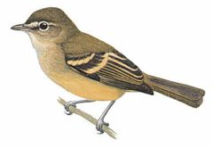
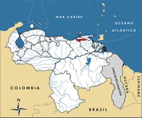

Phyllomyias urichi
| Atrapamoscas de Caripe | |
|---|---|
|  | |
| Riesgo de extinción | |
 En peligro (UICN) | |
| Clasificación científica | |
| Reino: | Animalia |
| Filo: | Chordata |
| Clase: | Aves |
| Orden: | Passeriformes |
| Familia: | Tyrannidae |
| Género: | Phyllomyias |
| Especie: | Phyllomyias urichi |
| Nombre binomial | |
|
Phyllomyias urichi Chapman, 1899 | |
| Distribución | |
|
 Mapa de distribución de Phyllomyias urichi | |
Contenido
Información de Evaluación
- Categoría y Criterio Regional: En Peligro B1ab(i,ii,iii)
- Fecha de Evaluación Regional: 2015
- Evaluadores: Jesús Morales-Campos y Ariany García-Rawlins
- Categoría y Criterio Global: En Peligro B1ab(i,ii,iii,v)
Justificación
Evaluaciones Previas
1999: No Evaluado (NE)
2008: En Peligro (EN)
Información General
Nombres comunes
Atrapamoscas de Caripe, atrapamoscas de Paria, atrapamoscas verdoso, atrapamoscas de Urichi, mosquerito de Paria, Urich's tyrannulet.
Notas taxonómicas
Sinónimos
Descripción
Ave pequeña de 12 cm de longitud, perteneciente al grupo de los atrapamoscas. Es fácil de confundir con otras especies similares, pero esta no presenta cresta, y su corona es grisácea olivácea, al igual que su torso. Las plumas de sus alas son negruzcas con franjas amarillentas y la cola tiene un tono pardo oliva. Su vientre es amarillo pálido y blanquecino hacia la garganta (Phelps y Phelps Jr. 1950, Hilty 2003, Restall et al. 2007, Fitzpatrick y Sharpe 2015).
Distribución
En la actualidad es considerada y tratada como especie endémica de Venezuela. Phyllomyias urichi se encuentra en las tierras altas de Caripe al noreste de Anzoátegui, norte de Monagas, suroeste de Sucre en el macizo de Turimiquire (Phelps y Phelps Jr. 1950). Es conocida por un número limitado de ejemplares de museo provenientes de cuatro localidades, y algunos registros visuales recientes en las cercanías de Caripe. Un registro visual de múltiples observadores con experiencia de campo en Cerro de Humo al extremo oeste de la península de Paria (Kirwan y Sharpe 1999), debe ser verificado (Ridgely y Tudor 1994, Fitzpatrick y Sharpe 2015). Habita en el bosque húmedo montano entre 900 y 1100 m de altitud. Por sus similitudes se confunde con frecuencia con otras especies, e incluso ha sido tratada como una subespecie de Phyllomyias reiseri o de P. virescens, anteriormente ubicada en el género Xanthomyias (Sibley y Monroe Jr. 1990). Sin embargo, su aislada distribución geográfica y sus diferencias físicas con estas otras aves justifican que sea considerada como una especie plena (Stotz 1990, Stotz et al. 1996, Restall et al. 2007, Fitzpatrick y Sharpe 2015).
- Sistema: Terrestre
- Bioregión:
- Intervalo altitudinal (m): 900-1100
- Endémica: Sí
Situación
Phyllomyias urichi ocupa un área muy limitada que se estima entre 1080 y 3000 km2, por lo que es muy susceptible a la pérdida de hábitat (BirdLife International 2004). Los ejemplares existentes provienen de cuatro localidades y no ha sido reportada en fecha reciente. Se estima que su tamaño poblacional alcanza entre 1000 y 2500 individuos, aunque con tendencia a disminuir (BirdLife International 2015). En el ámbito internacional califica En Peligro de Extinción (BirdLife International 2015).
- EOO (km2): 1100
- AOO (km2): Temporalmente sin información
- Tendencia Poblacional: Decreciendo
Amenazas
La deforestación cerca de Caripe para el desarrollo de actividades agrícolas ha sido muy intensa (Boesman y Curson 1995). De hecho, aproximadamente 60% de los bosques de la zona han sido deforestados en los últimos veinticinco años. Esto ha ocurrido incluso dentro de los parques nacionales El Guácharo y Península de Paria, situación que está amenazando a muchas otras especies. La serranía de Turimiquire se considera como una de las áreas más amenazadas de Venezuela, y tiene una larga historia de impactos ambientales, sobre todo con fines agrícolas, por incendios e invasiones de tierra. Esta amenaza es aún mayor y muy antigua en las partes altas de las cuencas donde se cultiva café. Para 1925 esta plantación llegaba a 2000 m de altitud, aunque tal información podría ser exagerada. En las zonas baja y media, la vegetación original ha sido sustituida por sabanas antrópicas y matorrales. La presión humana es severa incluso dentro las áreas protegidas, y en el parque nacional El Guácharo las prácticas agrícolas de los campesinos locales, que incluyen la destrucción del bosque, quemas repetidas y la eliminación del sotobosque para cultivos de café, han reducido el bosque húmedo montano a solo un pequeño porcentaje del original. Su distribución coincide con la de otras especies de aves en situación de riesgo (Lentino et al. 2005, Restall et al. 2007).
Conservación
El macizo de Turimiquire conforma, junto con la península de Paria y la isla Trinidad, uno de los centros suramericanos de endemismo de aves (Cracraft 1985) y plantas, por lo que figura entre las Áreas de Importancia para la Conservación de las Aves (Lentino et al. 2005). Asimismo, esta ave está protegida indirectamente por los parques nacionales El Guácharo y Península de Paria. Se requiere examinar la situación de estas áreas para determinar la extensión y calidad del hábitat disponible para Phyllomyias urichi, y así estimar su distribución, estatus poblacional y tolerancia a ambientes secundarios. Es crucial detener la pérdida de hábitat en la zona, a fin de proteger a todas las especies amenazadas presentes, en especial dentro de los parques nacionales. Esto requiere no solo la monitorización de las áreas protegidas y el mantenimiento del hábitat existente, sino también la reforestación de las partes degradadas. Se deben explorar otras alternativas para la agricultura, tanto para proveer el sustento de las comunidades locales, como para proteger la integridad del hábitat y sus especies. Sería importante verificar la identidad de las aves avistadas en Cerro Humo (Kirwan y Sharpe 1999), ya que aumentaría de modo considerable la distribución conocida; otra posibilidad es que representen un taxón desconocido.
Autorías
Autores originales
Christopher J. Sharpe
Colaboradores
Ilustrador
Guy Tudor
Referencias
- BirdLife International (2004). Threatened Birds of the World 2004 [CD-ROM]. Cambridge, UK: BirdLife International.
- BirdLife International. (2015). IUCN Red List for birds. Disponible en www.birdlife.org, consultada el 08/07/2015.
- Boesman, P. y Curson, J. (1995). Grey-headed Warbler Basileuterus griseiceps in danger of extinction? Cotinga 3: 35-39.
- Cracraft, J. (1985). Historical biogeography and patterns of differentiation within the South American avifauna: areas of endemism. Páginas: 49-84. En: Buckley, P. A., Morton, E., Ridgley, R. y Buckley, F. (Eds.). Neotropical Ornithology. Ornithological Monographs 36.
- Fitzpatrick, J. W. y Sharpe, C. J. (2015). Urich's Tyrannulet (Phyllomyias urichi). En: del Hoyo, J., Elliott, A., Sargatal, J., Christie, D. A. y de Juana, E. (Eds.). Handbook of the Birds of the World Alive. Lynx Edicions. Barcelona. (Descargado de www.hbw.com/node/57125, el 16/07/2015).
- Hilty, S. L. (2003). Birds of Venezuela, second edition. Princeton University Press. Princeton, NJ, USA. 878 pp.
- Kirwan, G. M. y Sharpe, C. J. (1999). Range extensions and notes on the status of little-known species from Venezuela. Bulletin of the British Ornithologists' Club 119(1): 38-47.
- Lentino, M., Esclasans, D. y Medina, F. (2005). Áreas importantes para la conservación de las aves en Venezuela. Páginas: 621-730. En: BirdLife International y Conservation International (Eds.). Áreas importantes para la Conservación de las aves en los Andes tropicales: sitios prioritarios para la conservación de la biodiversidad. BirdLife International (Serie de conservación de BirdLife No. 14) & Soc. Audubon de Venezuela, Caracas. Quito, Ecuador.
- Phelps, W. H. y Phelps Jr., W. H. (1950). Lista de las aves de Venezuela con su distribución (Parte 2). Passeriformes. Boletín de la Sociedad Venezolana de Ciencias Naturales 12: 1-427.
- Restall, R., Rodner, C. y Lentino, M. (2007). Birds of Northern South America, an Identification Guide. Volume 1: Species Accounts. Volume 2: Plates and Maps. Yale University Press. New Haven, USA and London, UK. 880 pp.
- Ridgely, R. S. y Tudor, G. (1994). The Birds of South America. Volume II: The Suboscine Passerines. University of Texas Press. Austin, Texas, USA.
- Rodríguez, J. P. y Rojas-Suárez, F. (1999). Libro Rojo de la Fauna Venezolana, segunda edición. PROVITA, Fundación Polar. Caracas. 444 pp.
- Rodríguez, J. P. y Rojas-Suárez, F. (Eds.) (2008). Libro Rojo de la Fauna Venezolana, tercera edición. Provita y Shell Venezuela, S. A. Caracas, Venezuela. 364 pp.
- Sharpe, C. J. (2015). Atrapamoscas de Caripe, Phyllomyias urichi. En: J.P. Rodríguez, A. García-Rawlins y F. Rojas-Suárez (eds.) Libro Rojo de la Fauna Venezolana. Cuarta edición. Provita y Fundación Empresas Polar, Caracas, Venezuela. Recuperado de: animalesamenazados.provita.org.ve/content/atrapamoscas-de-caripe Jue, 12/04/2018 - 09:26
- Sibley, C. G. y Monroe Jr., B. L. (1990). Distribution and Taxonomy of birds of the World. Yale University Press. New Haven, Connecticut, USA.
- Stotz, D. F. (1990). The taxonomic status of Phyllomyias reiseri. Bulletin of the British Ornithologists' Club 110: 184-187.
- Stotz, D. F., Fitzpatrick, J. W., Parker III, T. A. y Moskovits, D. K. (1996). Neotropical Birds. Ecology and Conservation. University of Chicago Press. Chicago, USA. 478 pp.